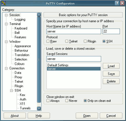
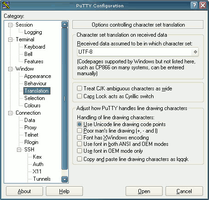
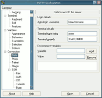
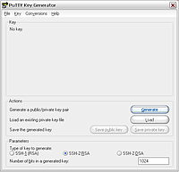
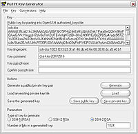

PuTTY
Dieser Artikel wurde für die folgenden Ubuntu-Versionen getestet:
Ubuntu 16.04 Xenial Xerus
Ubuntu 14.04 Trusty Tahr
Zum Verständnis dieses Artikels sind folgende Seiten hilfreich:
PuTTY  ist ein SSH-fähiger grafischer Terminal-Client. In der Regel wird mit PuTTY von einem Windows-Rechner auf einen Linux-Rechner zugegriffen. Es gibt jedoch auch eine Linux-Version von PuTTY, die man anstelle des standardmäßig bei Ubuntu installierten OpenSSH-Client benutzen kann.
ist ein SSH-fähiger grafischer Terminal-Client. In der Regel wird mit PuTTY von einem Windows-Rechner auf einen Linux-Rechner zugegriffen. Es gibt jedoch auch eine Linux-Version von PuTTY, die man anstelle des standardmäßig bei Ubuntu installierten OpenSSH-Client benutzen kann.
Hier wird die Verwendung von PuTTY als Client erläutert. Die Einrichtung des auf dem entfernten Rechner notwendigen SSH-Servers unter Ubuntu (sowie des erwähnten OpenSSH-Clients) wird im Artikel SSH beschrieben.
Installation¶
Windows¶
Es gibt einen Installationsassistenten putty-0.xx-installer.exe  , mit dem sich PuTTY bequem auf einem Windows- PC installieren lässt. Ist eine vollständige Installation nicht erwünscht oder möglich, genügt es, nur die Datei putty.exe von der Download-Seite herunterzuladen.
, mit dem sich PuTTY bequem auf einem Windows- PC installieren lässt. Ist eine vollständige Installation nicht erwünscht oder möglich, genügt es, nur die Datei putty.exe von der Download-Seite herunterzuladen.
Wer nicht nur Kommandozeilen-, sondern auch grafische Programme ausführen möchte, benötigt auf Windows-Seite noch einen X-Server. Die Installation eines X-Servers wird im Artikel Xming beschrieben.
 mit
mit Einrichtung¶
Nach der Installation sind einige Schritte nötig, um PuTTY mit dem zu verwendenden Server abzustimmen.
|  |
| Hostname eintragen |
|  |
| Zeichensatz UTF-8 einstellen |
|  |
| Auto login username |
Um nicht immer wieder erneut die Server-Informationen eingeben zu müssen, lassen sich die Verbindungsdaten zum Server als "Session" speichern. Dazu muss zunächst der "Host Name" des Servers eingestellt werden. Es muss entweder die IP-Adresse oder der DNS-Name des entfernten Computers angegeben werden (Bild 1).
Der zu verwendende Zeichensatz lässt sich unter "Window -> Translation" einstellen. Unter Ubuntu wird "UTF-8" verwendet und PuTTY ist dementsprechend einzustellen (Bild 2).
Zur automatischen Anmeldung mit einem bestimmten Benutzernamen lässt sich ein "Auto login username" in "Connection -> Data" angeben (Bild 3).
Schließlich müssen die Einstellungen noch als Session gespeichert werden.
Benutzung¶
Man muss PuTTY starten, danach die zuvor gespeicherte Session auswählen und diese mit "Open" aufrufen (oder direkt Doppelklick auf den Eintrag der gespeicherten Session in der Liste). Auch eine Angabe der Session als Parameter in der Windows-Befehlszeile ist möglich.
Kopieren und Einfügen¶
Text aus Putty kopieren¶
Einfach mit der rechten Maustaste den gewünschten Text markieren.
Text in Putty einfügen¶
Ubuntu: Mit der mittleren Maustaste wird der Text aus der Zwischenablage eingefügt
Windows: hier benutzt man die rechte Maustaste
Text aus Putty herauskopieren (Ubuntu)¶
Um Text, den man unter Putty markiert hat, an einer anderen Stelle einzufügen (z.B. im Editor), markiert man den Text in Putty ganz normal mit der linken Maustaste und drückt anschließend gleichzeitig mit der linken und der mittleren Maustaste in den Editor.
PuTTY mit (sicherer) Public-Key Methode¶
Um sich auf einen SSH-Server anzumelden, ohne dabei die Benutzerkennung angeben zu müssen, kann das Public-Key-Verfahren eingesetzt werden. Weiteres zum Thema Public-Key Authentifizierung findet man im Artikel SSH.
Um den privaten sowie den öffentlichen Schlüssel zu erzeugen, benötigt man unter Windows das Programm PuTTYgen.exe .
Hinweis:
Unter Linux kann man stattdessen ssh-keygen benutzen. Allerdings wird der Schlüssel in einem anderen Format erzeugt, sodass PuTTY ihn nicht ohne weiteres akzeptiert. Daher installiert man sich zusätzlich das Paket putty-tools und kann anschließend den mit ssh-keygen erzeugten Schlüssel konvertieren:
cd ~/.ssh && puttygen id_rsa -o id_putty -O private
Nach dem Start von puttygen.exe sieht man folgendes Fenster:

Je nachdem, ob man das alte SSH1 oder das neue SSH2 (empfehlenswert!) verwendet, wählt man unten den zu generierenden Schlüssel aus und betätigt die Schaltfläche "Generate". Die Anwendung erwartet nun, dass der Benutzer die Maus über das Fenster bewegt, um einige Zufallszahlen zu liefern. Nachdem der Schlüssel erstellt wurde, erscheint folgendes Fenster (rechts):

Hier sollte man einmal auf "Save public key" sowie auf "Save private key" klicken (den Public-Key zu speichern ist nicht unbedingt notwendig, er kann aus dem privaten Schlüssel errechnet werden). Des Weiteren sollte man den im oberem Fenster angezeigten öffentlichen Schlüssel in die Zwischenablage kopieren!
Nachdem die Schlüssel gespeichert wurden, kann man sich beim SSH-Server anmelden (noch via Benutzername/Passwort), um dort in der Datei ~/.ssh/authorized_keys den Public-Key aus der Zwischenablage wieder einzufügen. Falls das Homeverzeichnis auf dem entfernten Rechner verschlüsselt ist, liegt diese Datei woanders (siehe Verschlüsseltes Homeverzeichnis).
Nun geht es wieder mit PuTTY weiter: Man öffnet das Konfigurationsfenster und stellt wie oben gezeigt den "Auto-login unsername" ein. Dann wählt man noch unter dem Abschnitt "SSH -> Auth" den gespeicherten Privat-Key und speichert die Konfiguration für die Session.
Achtung!
Der Privat-Key sollte entweder an einer sicheren Stelle aufbewahrt werden oder schon bei der Erstellung mit einer Passphrase gesichert werden!
Nun sollte man sich bequem ohne Eingabe des Nutzernamens auf dem Zielsystem anmelden können.
- Erstellt mit Inyoka
-
 2004 – 2017 ubuntuusers.de • Einige Rechte vorbehalten
2004 – 2017 ubuntuusers.de • Einige Rechte vorbehalten
Lizenz • Kontakt • Datenschutz • Impressum • Serverstatus -
Serverhousing gespendet von